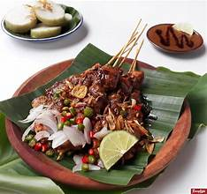
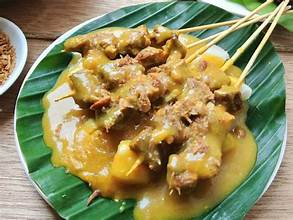
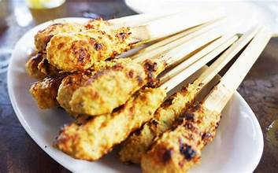
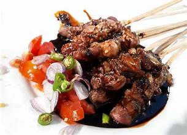

Bahan: Daging ayam, bawang putih, kecap manis, kacang tanah, gula merah.
Cara Membuat: Haluskan bumbu, lumuri daging, diamkan, tusuk, panggang hingga matang, sajikan dengan bumbu kacang.

Bahan: Daging sapi, bawang merah, bawang putih, kunyit, cabai, tepung beras.
Cara Membuat: Rebus daging dengan bumbu, potong kecil, tusuk, panggang, sajikan dengan kuah kental khas Padang.

Bahan: Daging ikan/tuna, kelapa parut, bawang merah, bawang putih, serai.
Cara Membuat: Campur bahan, lilitkan pada batang serai, panggang hingga matang.

Bahan: Daging kambing, bawang putih, ketumbar, garam, kecap manis.
Cara Membuat: Potong daging, marinasi dengan bumbu, tusuk, panggang hingga matang, sajikan dengan kecap dan irisan cabai.